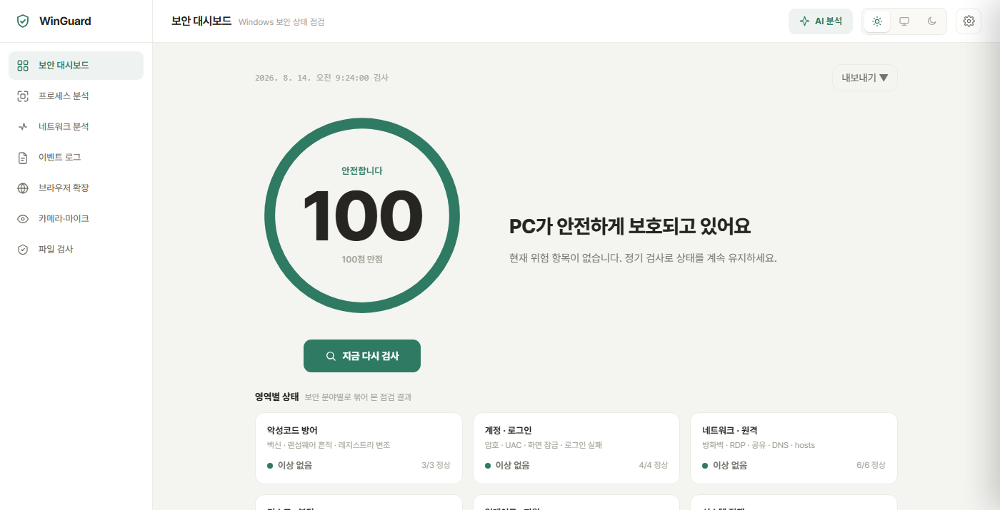
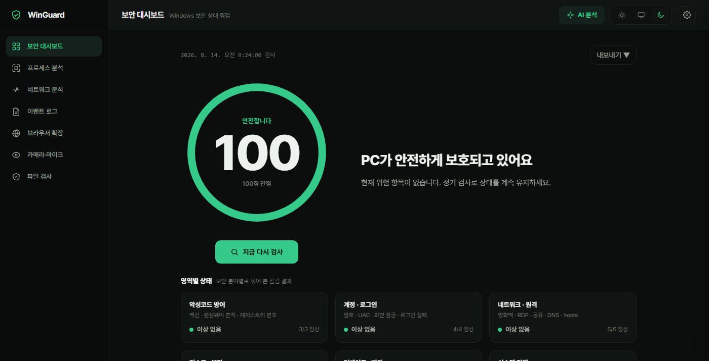

- 설치 없이 실행 파일 하나
- 온디바이스 AI, 외부 전송 없음
- Windows 11 (x64, ARM64)
핵심 기능
WinGuard가 내 PC를 지키는 방법
23종 상시 보안 점검
기본 보안 설정과 침해 징후를 함께 점검합니다.
기본 설정
- Defender
- 방화벽
- BitLocker
- UAC
- Secure Boot
- TPM
침해 징후
- DNS 하이재킹
- 랜섬웨어 흔적
- 레지스트리 변조
한눈에 보는 보안 점수
점검 결과를 가중치로 환산해 원형 게이지로 보여줍니다. 항목마다 무엇이 문제인지와 조치 방법이 함께 붙습니다.
온디바이스 AI 분석
Google Gemma 4 E2B 로컬 LLM 이 점검 결과를 해석합니다. 추론이 전부 기기 안에서 이뤄져 분석 대상 데이터가 외부로 나가지 않습니다.
프로세스와 네트워크 심층 분석
실행 중인 프로세스, 활성 네트워크 연결, 보안 이벤트 로그, 설치된 브라우저 확장 프로그램을 각각 살펴볼 수 있습니다.
카메라와 마이크 접근 제어
앱별로 카메라와 마이크 접근 권한을 확인하고, 원치 않는 프로그램의 접근을 차단할 수 있습니다.
VirusTotal 검사와 자동 백업
의심스러운 파일의 해시를 조회하거나 직접 업로드해 검사합니다. 레지스트리를 바꾸는 조치는 원래 값을 먼저 백업하고, 실패하면 조치를 중단합니다.
인터넷으로 전송되는 개인정보는 없습니다. 모든 AI 분석은 오직 내 PC 안에서만 이루어집니다.
Google Gemma 4 E2B 온디바이스 AI 가 로그와 이벤트를 기기 내부에서 직접 추론합니다. 외부와의 통신은 VirusTotal 파일 검사, AI 모델 내려받기, 업데이트 확인, 지원 종료일 조회 네 가지에 한정되며, 범위와 전송 항목은 개인정보 처리방침에 모두 공개해두었습니다.
내 PC 안에서 끝나는 일
- 23종 보안 점검
- Gemma 4 E2B 추론
- 로그와 이벤트 분석
외부와의 통신 네 가지
- VirusTotal 파일 검사
- AI 모델 내려받기
- 업데이트 확인
- 지원 종료일 조회
라이트와 다크 모드 지원
어떤 환경에서도 눈에 편안한 대시보드
라이트 모드 대시보드 스크린샷

다크 모드 대시보드 스크린샷

지금 무료로 다운로드하세요
무료 다운로드- 최신 버전
- v0.1.0
- 배포일
- 2026.08.15
- 라이선스
- MIT 오픈소스
- 운영체제
- Windows 11
- 아키텍처
- x64, ARM64
- 파일 크기 (x64)
- 약 11.6 MB